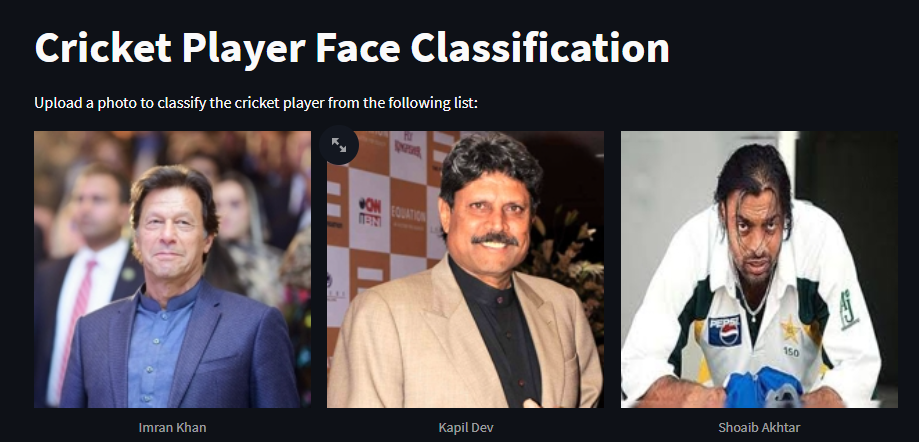

🎯 Face Classification Project
This project focuses on building a machine learning system capable of recognizing and classifying the faces of popular cricket players. With limited computational resources, I scoped the project to six well-known players, demonstrating the feasibility and scalability of automated face recognition in sports media and fan engagement applications.
🔍 Project Overview
The goal was to create a facial recognition model that could distinguish between multiple cricket players based solely on their facial features. This involved building a pipeline for image processing, face detection, feature extraction, model training, and deployment.
🛠️ Methodology
- Face Detection: Initially experimented with OpenCV Haar Cascades, but the results lacked accuracy and consistency. Transitioned to MTCNN (Multi-task Cascaded Convolutional Networks) for precise and reliable face detection and cropping.
- Feature Extraction: Performed Wavelet Transformation to capture texture-based features in the images. Combined the original images with their wavelet-transformed versions using horizontal stacking to enrich the feature set.
- Model Training: Trained a Support Vector Classifier (SVC) that achieved an 82% accuracy on the initial test set. Implemented Image Augmentation techniques (rotation, zoom, flipping) to expand the dataset and increase diversity, resulting in a boosted accuracy of 89%.
- Model Tuning: Employed GridSearchCV for hyperparameter tuning and cross-validation. Compared performance against other models such as Logistic Regression and Random Forest, confirming SVC as the best-performing model.
🧪 Dataset & Limitations
The dataset consisted of a few hundred labeled images per player, sourced from online image repositories. Due to limited computing resources, the model was constrained to six players. However, the pipeline is designed to scale with larger datasets and more powerful hardware.
🌐 Web Deployment
- Developed a Streamlit web application, allowing users to upload an image and classify it in real-time.
- The app is hosted on Streamlit Community Cloud, providing a seamless user experience.
- Designed with future scalability in mind—new players can easily be added as labels with further training.
This project demonstrates my ability to integrate computer vision techniques, advanced feature engineering, machine learning models, and web technologies into a cohesive and deployable solution. It highlights practical skills in image processing, model evaluation, and app development under hardware constraints.
- GitHub: View Repository
- Live Demo: View Website